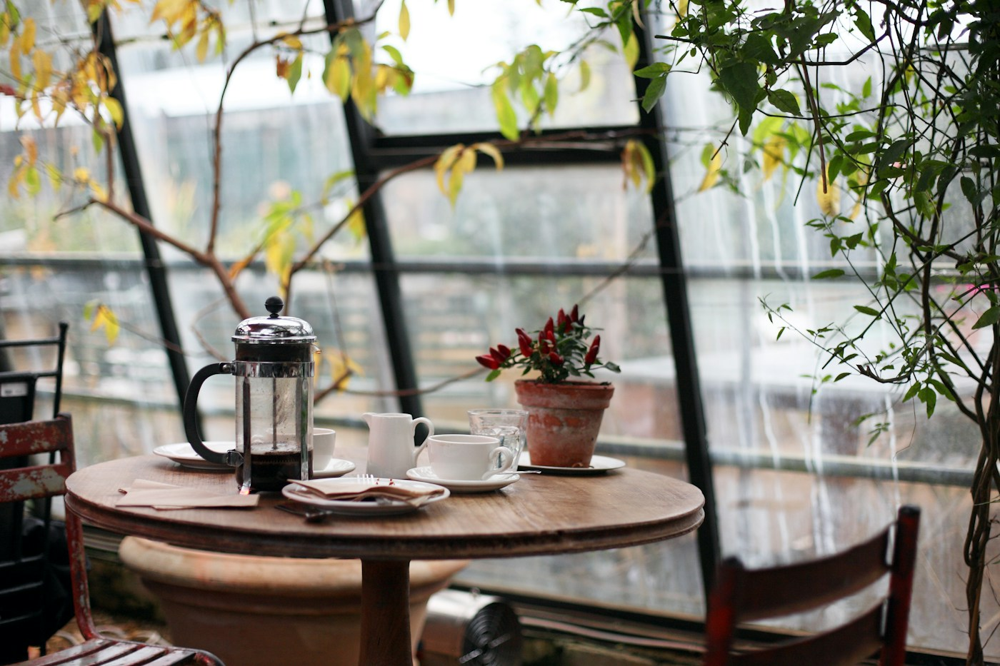
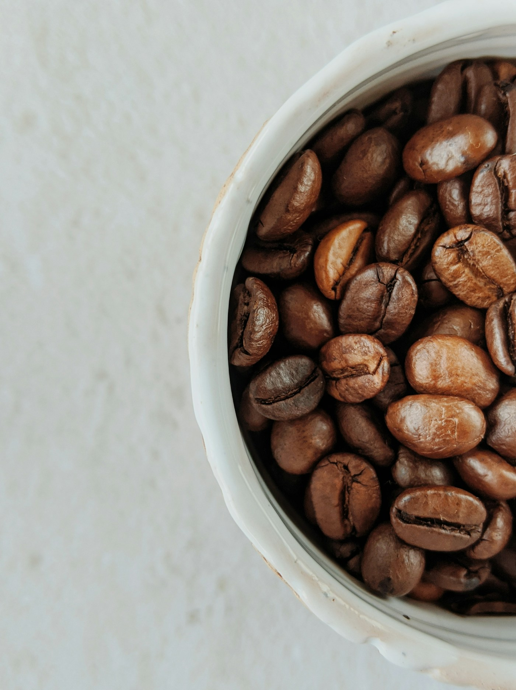

على مهل، وبكميات صغيرة
نحمّص أسبوعيًا، ونترك الحبوب تأخذ وقتها. الكميات الصغيرة تساعدنا على متابعة كل دفعة والتأكد من نكهتها.
عن سُكون
بدأت الفكرة من سؤال بسيط: كيف يبدو المكان الذي نود العودة إليه كل يوم؟ هادئ، دافئ، وفيه قهوة تُحضّر بعناية.


بدايتنا
لم نرد أن نصنع مقهى مزدحمًا بالضجيج. أردنا مساحة تشبه فنجان قهوة جيد: بسيطة، متوازنة، وتترك أثرًا لطيفًا.
بدأت سُكون كفكرة بين محبي القهوة: مساحة في الرياض تشرب فيها كوبًا جيدًا دون استعجال، وتعمل فيها بهدوء، أو تقرأ صفحة أو صفحتين.
اخترنا أن نحمّص الحبوب بأنفسنا، بكميات صغيرة، لنفهم كل محصول قبل أن نقدّمه. وأضفنا الماتشا اليابانية لأنها تمنحنا نوعًا آخر من الهدوء: خفق بطيء، ونكهة ناعمة، ولا شيء زائد.
كل ما حولك هنا اختير بهدوء: الألوان، الإضاءة، المقاعد، وحتى المسافة بين الطاولات. نؤمن أن التفاصيل الصغيرة هي التي تجعل المكان مريحًا. وأن أفضل قهوة هي التي تجعلك تبطئ قليلًا.
ما نؤمن به
لا نبحث عن الكمال، بل عن كوب ثابت الطعم، ومكان يجعلك تشعر أنك في بيته.
نحمّص أسبوعيًا، ونترك الحبوب تأخذ وقتها. الكميات الصغيرة تساعدنا على متابعة كل دفعة والتأكد من نكهتها.
نختار محاصيل تُناسب الذوق الهادئ، ونغيّرها مع الموسم. القائمة قد تكون أقصر، لكنها مدروسة.
إضاءة خفيفة، موسيقى منخفضة، ومسافات مريحة. سواء جئت للعمل أو للقراءة، نترك لك مساحتك.

من الحبة إلى الكوب
لا نختصر الطريق. كل مرحلة تُمنح وقتها، لأن النتيجة في الكوب تستحق ذلك.
نتذوق عينات موسمية، ونختار ما يقدم نكهة واضحة ومتوازنة.
دفعات صغيرة كل أسبوع، مع متابعة دقيقة لكل مرحلة.
نتأكد من النكهة والراحة قبل أن يصل المحصول إلى القائمة.
نطحن حسب طريقتك، ونحضّر الكوب بهدوء، من أول رشفة إلى آخرها.
فنجان القهوة الجيد لا يحتاج إلى ضجيج. يحتاج فقط إلى وقت، وانتباه، ومكان مريح.فريق سُكون
الكوب جاهز، والزاوية الهادئة تنتظرك. تعرّف على أوقات الزيارة وموقع الفرع.